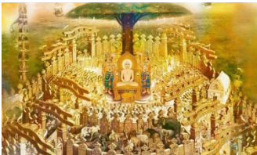
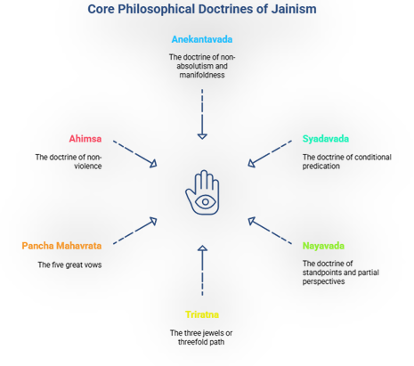
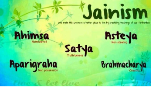
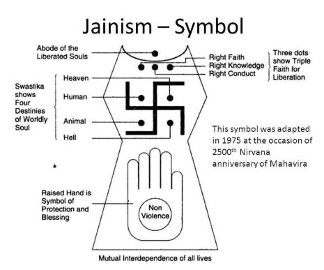
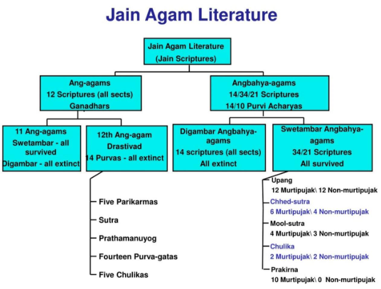
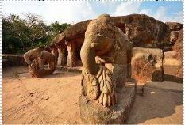
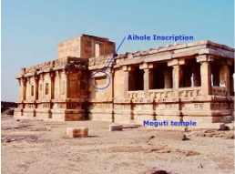
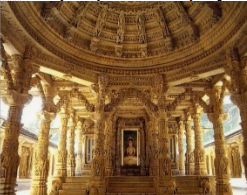

The origin of Jainism is ancient and somewhat mysterious. Traces in Indus Valley Civilization (IVC): Certain seals and symbols (like figures in meditative postures) suggest links to pre-Vedic traditions.
Jainism is considered older than Buddhism and a part of the broader Śramaṇic tradition (ascetic movements outside Vedic orthodoxy).
Tirthankaras are “Ford-makers” — spiritual teachers who attained kevala jnana (perfect knowledge) and guided others toward liberation (moksha).
Total: 24 Tirthankaras in Jain tradition.
The word ‘Jain’ is derived from Jina(“Conqueror”)
Refers to one who has conquered worldly attachments, desires, and attained spiritual victory.
| Category | Key Points |
|---|---|
| Religious Factors |
• Reaction against rigidity of Vedic religion, complex rituals, and Brahmana dominance. • Opposition to the varna system and its rigid birth-based hierarchies. • Kshatriyas resented Brahmanical supremacy and supported alternative paths like Jainism. |
| Socio-Economic Factors |
• New agrarian economy in eastern India (iron tools, surplus production) questioned priestly dominance. • Brahmanas imposed strict occupational restrictions, alienating several groups. • Jainism’s teachings in Prakrit (common language) made them accessible, unlike Sanskrit texts of Brahmanas. |
| Philosophical Factors |
• Emphasis on personal effort, discipline, and practice over rituals. • Stressed experience-based proof rather than textual authority or speculation. • Salvation considered attainable by any individual, irrespective of caste or birth. |
Jainism became a prominent organized religion in 6th century BCE, contemporaneous with Buddhism.
It appealed especially to urban merchants, artisans, and agriculturists, alongside Kshatriyas dissatisfied with Brahmanical dominance.
Quote (Bhakta-parijna): “It is owing to attachment that a person commits violence, utters lies, commits theft, indulges in sex, and develops a yearning for unlimited hoarding.”
Converted 11 chief disciples (Ganadharas) – mostly Brahmanas.

Important disciples:
Titles:
Important Tirthankaras:

Path to moksha (liberation):
(Originally 4 by Parshvanatha; Mahavira added Brahmacharya)


| Tirthankara | Symbol | Tirthankara | Symbol |
|---|---|---|---|
| 1. Rishabhanatha (Adinatha) | Bull / Ox | 13. Vimalanatha | Bear |
| 2. Ajitanatha | Elephant | 14. Anantnatha | Falcon |
| 3. Sambhavanatha | Horse | 15. Dharmanatha | Vajra |
| 4. Abhinandananatha | Monkey | 16. Shantinatha | Deer |
| 5. Sumatinatha | Red Goose | 17. Kunthunatha | He-Goat |
| 6. Padmaprabha | Lotus | 18. Aranatha | Fish |
| 7. Suparshvanatha | Swastika | 19. Mallinatha | Kalash (Pot) |
| 8. Chandraprabhu | Crescent Moon | 20. Munisuvrata | Tortoise |
| 9. Pushpadanta (Suvidhinatha) | Crocodile | 21. Naminatha | Blue Water Lily |
| 10. Shitalanatha | Kalpavriksha (Wishing Tree) | 22. Neminatha | Shankh (Conch) |
| 11. Shreyansanatha | Rhinoceros | 23. Parshvanatha | Snake |
| 12. Vasupujya | Buffalo | 24. Mahavira | Lion |
Dualistic philosophy → Universe consists of two eternal categories:
Bondage of Jiva and Ajiva → Karma (material particles) binds the soul to the cycle of birth and rebirth. Liberation (Moksha) is attained by shedding karma through penance, right conduct, and knowledge.
| Type of Knowledge (Jnana) | English Term | Description | Example |
|---|---|---|---|
| Mati Jnana | Sensory Knowledge | Knowledge obtained through the direct or indirect activity of the sense organs and the mind. It includes perception, recognition, reasoning, and inference. | Seeing a fire and inferring the presence of smoke. |
| Sruta Jnana | Scriptural Knowledge | Knowledge derived from scriptures, signs, symbols, or a teacher. It depends on Mati Jnana to be understood. | Reading or hearing about a Jain doctrine from a sacred text. |
| Avadhi Jnana | Clairvoyant Perception | Direct, extrasensory knowledge of physical objects and events, limited by space and time. | Perceiving events happening at a distant location. |
| Manahparyaya Jnana | Telepathic Knowledge | Direct knowledge of the thoughts, states of mind, and emotions of other beings. A higher form of perception than Avadhi. | Knowing exactly what another person is thinking. |
| Kevala Jnana | Omniscience | Supreme, absolute, and unlimited knowledge. The complete knowledge of all substances and their modes, past, present, and future. Attained at the peak of spiritual evolution. | The state of perfect knowledge achieved by a Tirthankara like Mahavira. |
| Aspect | Digambaras (Sky-clad) | Shvetambaras (White-clad) |
|---|---|---|
| Leadership | Bhadrabahu | Sthulabhadra |
| Clothing | Monks practice nudity; total renunciation. | Monks wear white clothes. Female ascetics wear unstitched white sarees (Aryikas). |
| View on Women | Women cannot attain moksha; must be reborn as men. Mallinatha (19th Tirthankara) seen as male. | Women can attain moksha; Malli accepted as a female Tirthankara (only woman Tirthankara). |
| Life of Mahavira | Belief: Mahavira never married, renounced while parents were alive. | Belief: Mahavira married, lived as a householder till 30, renounced after parents’ death. |
| Omniscience & Food | Omniscient beings need no food. | Omniscient beings require food. |
| Idols of Tirthankaras | Nude, plain, meditative, downcast eyes. | Clothed, ornamented, glass eyes in marble. |
| Terminology for Biographies | Purana | Charita |
| Canonical Literature | Original texts considered lost; rejected redrafting of Angas at 1st Council under Sthulabhadra. | Accepted the 12 Angas and Sutras as canonical and valid. |
| Ascetic Possessions | Monks renounce all belongings; may keep Rajoharana (peacock-feather broom) and Kamandalu (wooden water pot). | Allowed 14 possessions (loincloth, shoulder cloth, etc.). |
| Philosophical Emphasis | Stress on strict asceticism and renunciation. | More liberal approach; acceptance of wider participation in religious life. |
| Tradition | Sub-Sect | Nature / Practice | Key Features |
|---|---|---|---|
| Digambara | Mula Sangh (Major) | Oldest | Associated with Acharya Kundakunda (c. 430 CE) |
| Digambara | Bisapantha (Major) | Idolatrous | Worships Tirthankaras + Yakshas & Yakshinis; emphasizes rituals (aarti, offerings) |
| Digambara | Terapantha (Digambara) (Major) | Reformist Idolatrous | Worship with ashtadravya; rejects Bhattarakas & rituals like offerings |
| Digambara | Taranpantha / Samaiyapantha (Major) | Non-idolatrous | Temples house scriptures instead of idols; stresses study & spiritual values |
| Digambara | Gumanapantha (Minor) | Idolatrous | Small following; less influential |
| Digambara | Totapantha (Minor) | Idolatrous | Small following; regional influence |
| Shvetambara | Murtipujaka (Deravasi) (Major) | Idolatrous | Temples with Tirthankara images; saints do not wear muhapatti |
| Shvetambara | Sthanakavasi (Major) | Non-idolatrous | Saints wear muhapatti; emphasize meditation & prayers over rituals |
| Shvetambara | Terapanthi (Shvetambara) (Major) | Strict Non-idolatrous | Highly disciplined; obedience to Acharya; saints wear muhapatti |
Jain Literature is called Agamas (canonical texts) or Siddhantas.
Based on the teachings of Lord Mahavira, initially preserved orally, later documented.
Written mainly in Ardha-Magadhi Prakrit, later also in Sanskrit, Apabhramsha, Old Marathi, Rajasthani, Gujarati, Kannada, Tamil, Hindi, German, English.
Provides insights into religion, philosophy, politics, economy, trade, culture, and society of ancient India.
Surviving Canon (Śvetāmbara tradition):

Examples:
Explanations and expansions of Angas. Mostly dogmatic, mythological in content.
Deal with monastic discipline, penance, and rules for monks/nuns. Closely parallel to Vinaya-Pitaka of Buddhists.
Basic scriptures for beginners in monkhood. Example: Uttaradhyayana Sutra – Collection of sermons, parables, and ballads.
Encyclopedic in nature, cover both religious and non-religious subjects.
Consists of commentaries, independent treatises, and philosophical texts.
Written in multiple languages: Prakrit, Sanskrit, Apabhramsha, regional Indian languages, and modern languages.
Examples:
Digambaras believe Śvetāmbara canon is lost. They preserved Jain doctrine through separate texts:
Divided into four categories:
| Author | Work(s) | Notes |
|---|---|---|
| Bhadrabahu | Kalpa Sutra, Cheda Sutras, Bhadrabahu Samhita | Early Digambara acharya. |
| Kundakunda | Samayasara, Niyamsara, Pravachanasara | Philosophical classics in Prakrit. |
| Samantabhadra Swamy | Ratnakaranda Shravakachara | Code of conduct for lay followers. |
| Pujyapada | Sarvarthasiddhi | Oldest commentary on Tattvartha Sutra. |
| Jinasena & Gunabhadra | Trishashtilakshana Mahapurana (Adi Purana + Uttara Purana) | Jain universal history. |
| Hemachandra (Śvetāmbara) | Yogasastra, Salakapurusha, Parishishtaparvan, Arhanniti | Covers yoga, history, and politics. |
| Shubhacandra | Jnanarnava | Focuses on meditation. |
| Council | Date | Place | Leader | Royal Patron | Outcome |
|---|---|---|---|---|---|
| First | c. 322–298 BCE | Pataliputra (Bihar) | Sthulabhadra | Chandragupta Maurya (trad.) | 12 Angas compiled to replace 14 Purvas; rejected by Digambaras |
| Second | 512 CE | Vallabhi (Gujarat) | Devardhi Kshamashramana | – | Final compilation & preservation of 12 Angas + 12 Upangas |


